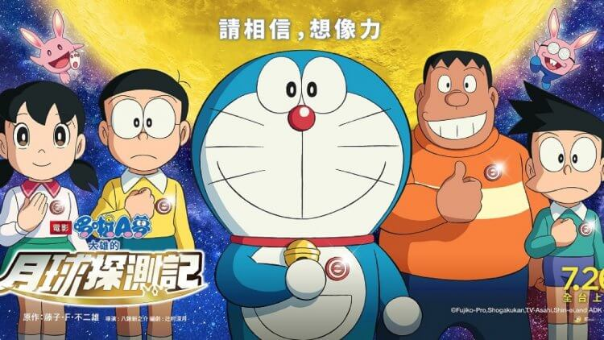
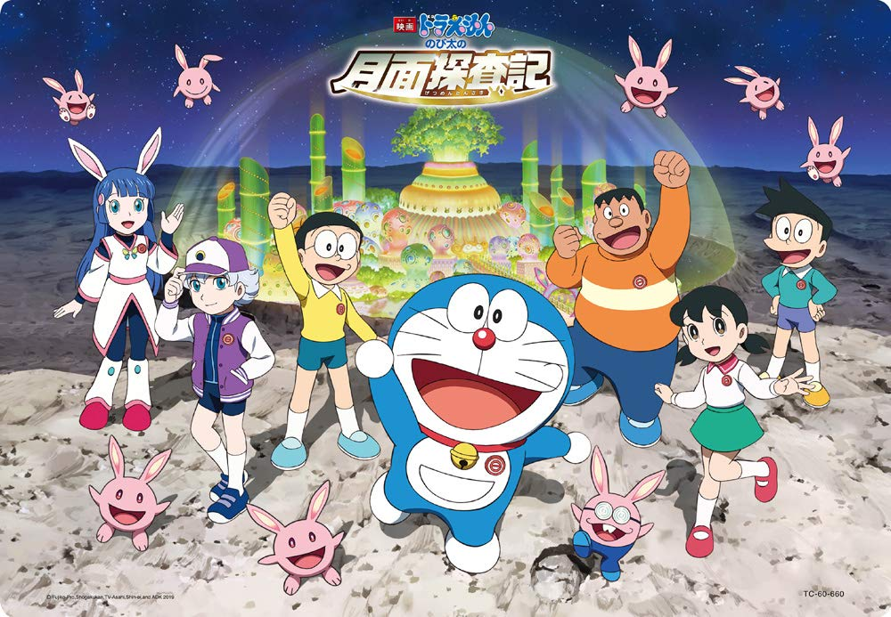
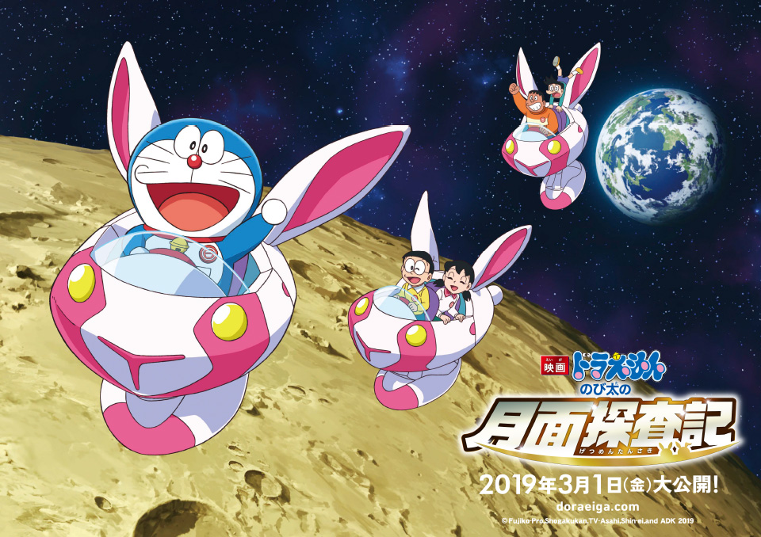
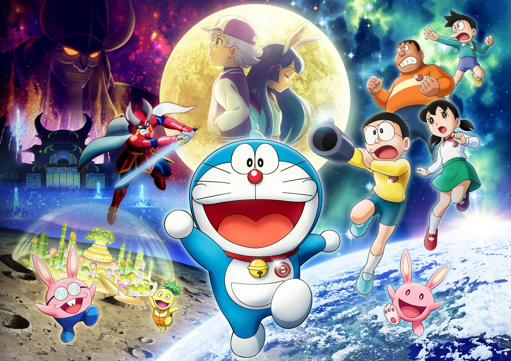
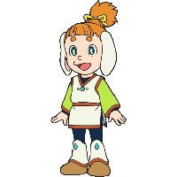
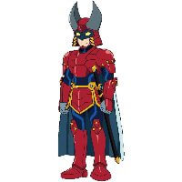
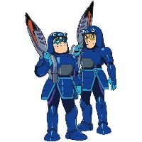

- 故事與細節
- 人物
- 資料
《電影哆啦A夢：大雄的月球探測記》（大雄的月球探險記）是 2019 年上映的哆啦A夢電影，邀請曾得過直木賞的著名小說家．哆啦A夢迷辻村深月所創作，是哆啦A夢電影史上第一次「登月」的作品，成功塑造出大雄與琉華的友情與有趣的月球世界。她也親自執筆電影的小說化作品，劇情的深度與細節巧思贏得許多哆啦A夢迷的讚賞。另外在台灣，電影片商也從本作起變更為車庫娛樂，並在票房上有顯著的上升。
故事劇情
|  |
|---|
「信賴的力量讓我們緊緊相連！」
月兔王國
|  |
|---|
「月球探測器」在月亮上捕捉到了白色影子的新聞引起熱議，大雄說大概是月亮上有兔子吧，惹來大家一陣大笑。結果，哆啦A夢用了秘密道具「異說俱樂部徽章」，在月球的背面做出了一個月兔王國！
|  |
|---|
神秘的轉學生
有一天，不可思議的少年琉華轉學到這裡，與大雄他們一起到了月兔王國。在那裡，大雄一行人偶然間與琉華的姐姐琉奈，以及其他擁有不可思議力量，被稱為「超能力者」（エスパル）的孩子們相遇了。
|  |
|---|
未知的敵人
相處得很好的哆啦A夢一行人與超能力者們的前方，卻出現了一個神祕的太空船。每個超能力者都被抓走了，為了拯救哆啦A夢他們，就連琉華也被抓走了！到底大雄他們是否能成功幫助琉華呢？
|
|
琉華 ルカ 來到大雄班上的不可思議轉學聲。他的真實身分是…？ |
|---|---|
| 琉奈 ルナ 在月球深處居住的「超能力者」，與眾多同伴住在一起，遠離塵囂。 |
|
 |
亞琉 アル 他與琉奈他們這群「超能力者」住在一起，據說歌聲跟胖虎有得比。 |
| 摩佐 モゾ 他是一隻月牙陸龜，同時也與琉華交情不錯，口頭禪是「竟然不知道嗎？」（ご存じない？）。 |
|
| 野比兔 ノビット 戴著眼鏡，與大雄很像、老是失敗的月兔。 |
|
| 迪亞波羅 ディアボロ 為了某種目的而想要奪取「超能力者」們擁有的不可思議能力。 |
|
 |
戈達德 ゴダート 聽從迪亞波羅命令來尋找「超能力者」的部隊隊長。 |
 |
坎瑟/庫拉伯 キャンサー/クラブ 戈達德的手下，一起尋找「超能力者」。 |

|
|---|